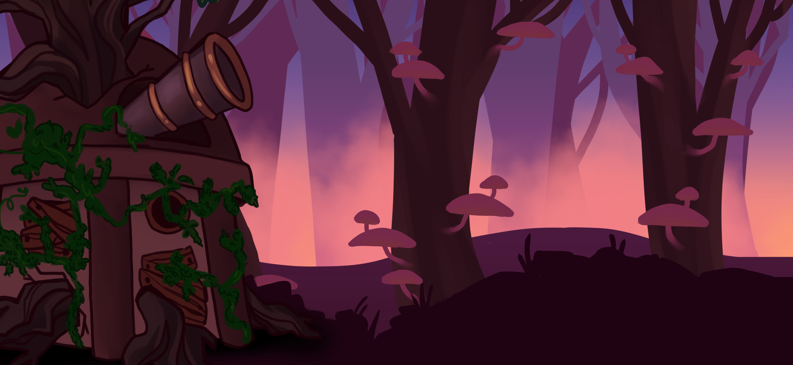
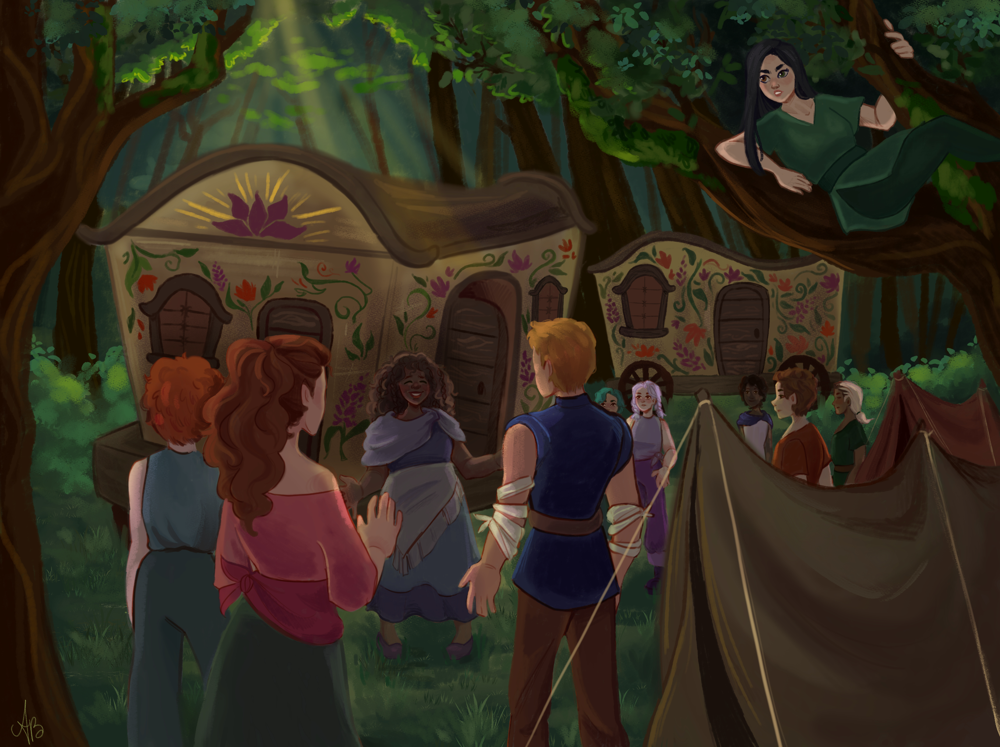

×

Concept Artwork
two separate art pieces based on original video game concepts
Observatory at Dusk

This drawing was created in Clip Studio Paint. It is a design for a fantasy platformer game
that I was going to help develop, but the idea was scrapped due to time constraints. The game
had a heavy focus on atmosphere since each level was going to take place at a different time of day.
This was the setting for the first level of the game, in which the main character escapes an abandoned
astronomy observatory.
An Enchanting Encounter

This drawing was created in Clip Studio Paint. It is a design for a fantasy platformer game
that I was going to help develop, but the idea was scrapped due to time constraints. The game
had a heavy focus on atmosphere since each level was going to take place at a different time of day.
This was the setting for the first level of the game, in which the main character escapes an abandoned
astronomy observatory.